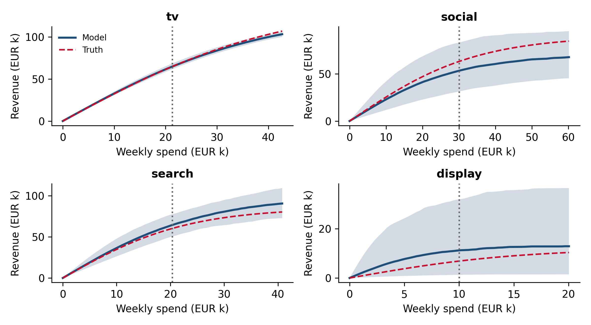

Chapter 12 Response curves and budget optimization
How much to spend in total and how to split it across channels, based on marginal returns rather than averages, with an honest view of how much a recommended reallocation is likely to gain and how much it could lose.
12.1 Average returns do not set budgets
A channel’s ROI from an MMM is an average over everything spent in it. Budget decisions are about the next euro, or the last one, and with diminishing returns those are worth less than the average. The response curve shows expected revenue as a function of spend; its slope is the marginal ROI. Two rules follow, and they are worth stating plainly because they are so often ignored:
- Move money from channels with low marginal ROI to channels with high marginal ROI, until marginal returns are equal or a constraint binds. This is the logic behind classic results such as the Dorfman-Steiner condition on optimal advertising.
- Grow the total budget while the marginal return beats the cost of capital, measured on profit, not revenue. If gross margin is 60%, a euro of spend has to bring back about 1.67 euros of revenue at the margin just to break even.
A channel with an excellent average ROI can be a poor place for the next euro if it is near saturation, and a channel with a mediocre average can be the best place for it if it is far from saturation.
12.2 Response curves from the posterior
Each posterior draw of the Bayesian MMM defines one response curve per channel. We use the best specification from Chapter 11, the model that includes the category demand proxy and is calibrated with the search geo test, and compute the steady-state weekly revenue that a constant weekly spend level would produce. (For a flighted channel such as TV, a steady weekly level is an approximation; budget tools usually also model flighting patterns.)
import sys; sys.path.insert(0, ".")
import warnings; warnings.filterwarnings("ignore")
import numpy as np, pandas as pd, arviz as az
import matplotlib.pyplot as plt
from pms_sim import simulate, CHANNELS, TRUTH, logistic_saturation
from pms_mmm import lagged, L_MAX
df, truth = simulate()
X = df[CHANNELS].to_numpy(); x_scale = X.max(0); y_scale = df["revenue"].mean()
Xlag = lagged(X / x_scale)
current = X.mean(0) # average weekly spend per channel
rng = np.random.default_rng(0)
def load_draws(name, k=500):
post = az.from_netcdf(f"_cache/mmm_{name}.nc").posterior
get = lambda v: post[v].stack(s=("chain", "draw")).values # (channel, draws)
idx = rng.choice(get("beta").shape[1], k, replace=False)
d = {v: get(v)[:, idx] for v in ["decay", "lam", "beta"]}
w = d["decay"][None] ** np.arange(L_MAX)[:, None, None] # (lag, channel, draw)
adst = np.einsum("lwc,lcs->wcs", Xlag, w)
d["norm"] = logistic_saturation(adst, d["lam"][None]).mean(0) # rescaling used in the model
d["carry"] = w.sum(0) # steady-state adstock multiplier
return d
def weekly_revenue(spend, d):
"""Expected weekly revenue per channel (channel, draw) at constant weekly spend levels."""
a = (np.asarray(spend)[:, None] / x_scale[:, None]) * d["carry"]
return d["beta"] * y_scale * logistic_saturation(a, d["lam"]) / d["norm"]
def true_weekly_revenue(spend):
out = []
for i, c in enumerate(CHANNELS):
p = TRUTH[c]
a = spend[i] / x_scale[i] * (p["decay"] ** np.arange(L_MAX)).sum()
out.append(p["beta"] * logistic_saturation(a, p["lam"]))
return np.array(out)
draws = {name: load_draws(name) for name in ["base", "calibrated", "proxy_calibrated"]}d = draws["proxy_calibrated"]
fig, axes = plt.subplots(2, 2, figsize=(8, 4.4))
for i, (c, ax) in enumerate(zip(CHANNELS, axes.ravel())):
grid = np.linspace(0, 2.0 * current[i], 60)
curves = np.array([weekly_revenue(np.where(np.arange(4) == i, g, 0.0), d)[i] for g in grid])
lo, med, hi = np.quantile(curves, [0.05, 0.5, 0.95], axis=1)
ax.fill_between(grid / 1e3, lo / 1e3, hi / 1e3, alpha=0.2)
ax.plot(grid / 1e3, med / 1e3, lw=2, label="Model")
ax.plot(grid / 1e3, [true_weekly_revenue(np.where(np.arange(4) == i, g, 0.0))[i] / 1e3 for g in grid],
ls="--", color="#C8102E", label="Truth")
ax.axvline(current[i] / 1e3, ls=":", color="#6B6B6B")
ax.set_title(c); ax.set_xlabel("Weekly spend (EUR k)"); ax.set_ylabel("Revenue (EUR k)")
axes[0, 0].legend(fontsize=8)
plt.tight_layout()
plt.show()
Figure 12.1: Weekly response curves from the calibrated model with demand proxy (median and 90% band), the true curves (dashed), and current average spend (dotted).
12.3 Marginal ROI at current spend
def marginal_roi(spend, d, step=0.01):
up = weekly_revenue(spend * (1 + step), d)
return (up - weekly_revenue(spend, d)) / (spend[:, None] * step)
rows = {}
for name, d in draws.items():
m = marginal_roi(current, d)
rows[name] = [f"{np.median(m[i]):.2f} [{np.quantile(m[i], .05):.2f}, {np.quantile(m[i], .95):.2f}]"
for i in range(4)]
true_m = (true_weekly_revenue(current * 1.01) - true_weekly_revenue(current)) / (current * 0.01)
tbl = pd.DataFrame(rows, index=CHANNELS)
tbl["truth"] = true_m.round(2)
print("Marginal ROI at current spend, median [90% interval]:\n" + tbl.to_string())## Marginal ROI at current spend, median [90% interval]:
## base calibrated proxy_calibrated truth
## tv 2.44 [2.36, 2.53] 2.41 [2.32, 2.50] 2.48 [2.40, 2.54] 2.58
## social 0.83 [0.41, 1.25] 0.93 [0.48, 1.48] 0.90 [0.54, 1.30] 1.31
## search 5.97 [5.44, 6.47] 4.62 [4.11, 5.04] 2.11 [1.41, 2.71] 1.82
## display 0.24 [0.00, 1.69] 0.28 [0.00, 2.11] 0.24 [0.00, 1.44] 0.52Compare these with the average ROIs in Chapter 10. For social, search and display, the marginal return is well below the average: the next euro buys much less than the typical one. Search is the starkest case. Its true marginal ROI is under 2 against an average near 3, and the uncalibrated model puts it near 6. Only the model that both controls for demand and is calibrated with the geo test gets close.
TV is the exception, and an instructive one: its marginal ROI at a steady average spend level is slightly above its average ROI. TV actually ran in heavy flights, which push each flight further up the saturation curve than the same budget spread evenly would. The response curve answers “what if we spent this much every week”, which is a different plan from the one that generated the data. Curves for flighted channels need to be read with the flighting pattern in mind.
12.4 Optimizing the allocation
With the total weekly budget held fixed, we search for the allocation that maximizes expected revenue, averaging over posterior draws, with each channel kept between 50% and 150% of its current level. The bounds are not a technicality: outside the range of spend the model has seen, the curves are extrapolations driven by the functional form and the priors, and an unconstrained optimizer will happily exploit that.
from scipy.optimize import minimize
budget = current.sum()
def optimize(d):
# Optimize over multipliers of current spend: well-scaled for the optimizer
obj = lambda m: -weekly_revenue(m * current, d).sum(0).mean() / y_scale
r = minimize(obj, np.ones(4), method="SLSQP", bounds=[(0.5, 1.5)] * 4,
constraints={"type": "eq", "fun": lambda m: (m * current).sum() / budget - 1})
return r.x * current
results = {}
for name, d in draws.items():
alloc = optimize(d)
model_gain = weekly_revenue(alloc, d).sum(0) - weekly_revenue(current, d).sum(0) # per draw
true_gain = true_weekly_revenue(alloc).sum() - true_weekly_revenue(current).sum()
results[name] = {**{c: alloc[i] / current[i] - 1 for i, c in enumerate(CHANNELS)},
"forecast gain": model_gain.mean(),
"P(gain>0)": (model_gain > 0).mean(),
"true gain": true_gain}
out = pd.DataFrame(results).T
fmt = out.copy()
for c in CHANNELS: fmt[c] = out[c].map("{:+.0%}".format)
for c in ["forecast gain", "true gain"]: fmt[c] = out[c].map("{:,.0f}".format)
fmt["P(gain>0)"] = out["P(gain>0)"].map("{:.0%}".format)
print("Change in weekly spend by channel; weekly revenue gain (EUR):\n" + fmt.to_string())## Change in weekly spend by channel; weekly revenue gain (EUR):
## tv social search display forecast gain P(gain>0) true gain
## base +46% -50% +50% -50% 55,217 100% 6,826
## calibrated +40% -46% +50% -50% 40,720 100% 6,945
## proxy_calibrated +50% -37% +27% -50% 15,583 99% 11,371This table is the core lesson of the chapter. Each row is the recommendation a model would make with the same budget, scored twice: by the model’s own forecast, and by what the reallocation would truly deliver.
The uncalibrated model believes search has a high marginal return, so it pushes search to its upper bound. It forecasts a weekly gain of 55,217 EUR and is certain the gain is positive. Following its advice would truly gain 6,826 EUR a week. That is still a gain, mostly because moving money from social and display into TV happens to be right, but it is a fraction of what was promised.
The model calibrated with the geo test alone still overstates search, still pushes it to the bound, and still overpromises: a forecast of 40,720 EUR against a true 6,945 EUR.
The model that controls for demand and is calibrated moves less money into search and more into TV. It forecasts 15,583 EUR and truly delivers 11,371 EUR: the largest real gain of the three, and the only forecast close to reality.
An optimizer is an amplifier. It takes whatever the model believes most confidently and acts on it at the boundary of what it is allowed to do. If that belief is a confounded coefficient, the optimizer turns a measurement error into a budget error. This is why optimization should come last, after calibration, and why the constraints should be tight until the curves have been tested.
Running a budget optimizer on an uncalibrated MMM and presenting the result as a plan. The channels most likely to be overstated (those whose spend follows demand) are exactly the ones an optimizer will push hardest.
12.5 Setting the total budget
The same machinery answers the level question: increase the total budget in steps, re-optimize the split at each step, and track the marginal return of the last euro. Stop where it falls below the break-even threshold on profit (1.67 at a 60% margin in the example above), or below the return available from other uses of the money. Report the answer as a range, because the marginal return’s uncertainty grows quickly as spend moves away from historical levels.
12.6 Turning a recommendation into a test
The most defensible way to act on an optimizer is to treat its output as a hypothesis. Move part of the way toward the recommended allocation, in a way that can be measured: a heavy-up in a subset of regions for the channel the model wants to grow, a scale-back in regions for the channel it wants to cut (Chapter 6). The result either confirms the curve, in which case you move further, or corrects it, in which case the model is recalibrated. Over a few cycles this converges on an allocation that rests on measured marginal returns rather than on functional-form assumptions.
12.7 Checklist
- Is the decision based on marginal ROI at current spend, not average ROI?
- Is the break-even threshold set on profit (margin-adjusted), not revenue?
- Are the curves from a calibrated model, and are channels with confounded or prior-dominated estimates flagged?
- Are optimizer bounds kept within the historically observed spend range?
- Is the expected gain reported with its uncertainty and the probability of a loss?
- Is the recommendation implemented as a measurable step (heavy-up or scale-back test) rather than all at once?
12.8 Further reading
- Dorfman-Steiner theorem for the classic economics of optimal advertising budgets.
- Budgeting with Bayesian models (Bolt) for optimizers built on Bayesian MMMs.
- PyMC-Marketing and Meridian budget optimizer documentation.
Full links are in Appendix A.